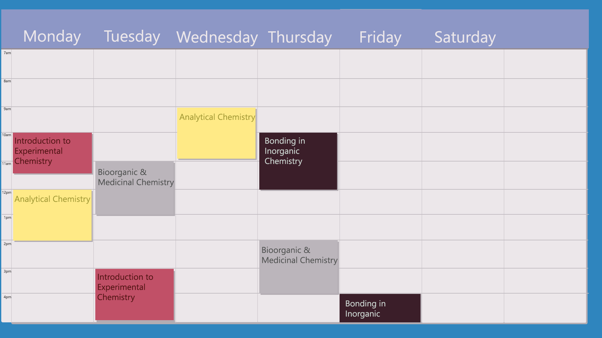
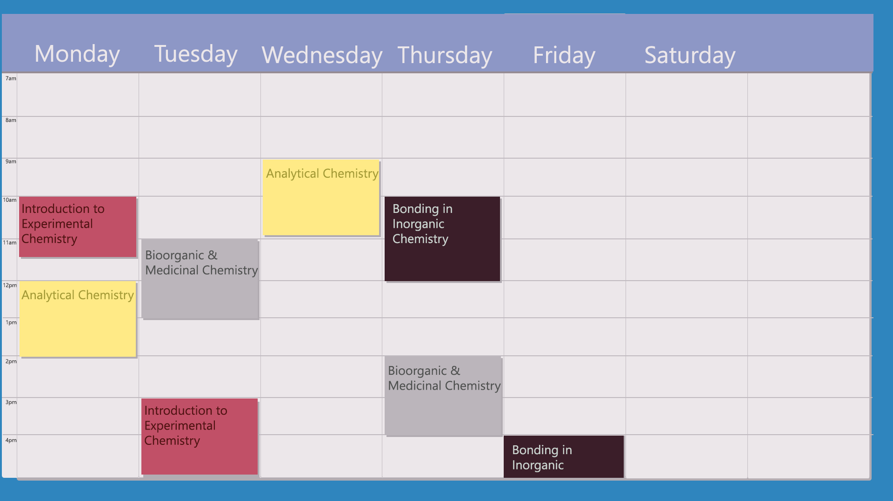

When you download the application to your phone, laptop or iPad for the first time you will be presented with a sign in screen. Where we'll requeste you to enter your name, e-mail and phone number. We use this information to create a profile for you as well as recommend friends who may already be using the application.
After signing up for the service, a first time, free user is offered up to four courses to customise. You'll be allowed to customize each course to by choosing a color to represent it as well as an icon. Say hi to James! He's a first your chemistry student at university. Let's follow his sign up experience.
After completing the sign up experience you will be greeted with a home dashboard alot like this one. As you can see James has used the application for quite some time and has alot going on. Hopefully that group research project goes well.
 

Now, in order to show you the true value of Your Back Pack we need to take a peak at James' weekly schedule. He won't mind.
As you can see James has alot of free time. Usually, James would have to pull his hair out managing and optimising this free time but BP does all of this for him. All he has to do is take notes in his note notebook like he normally would and schedule his tests.Furthermore, if he simply takes note of a tests or homework in a nootbook, BP while be able to assign timeslots where the homework is due or the test is scheduled. Moreover, how would James know the optimum time to study? Well he doesn't have to worry about that. BP knows you and your learning style and generates a perfect schedule for each user. Notice how most of James' suggested sessions start around 8, this is because BP knows that James' optimal study time is 8am. Furthermore, James starts a bit slow on the weekend so BP adjusts for that.